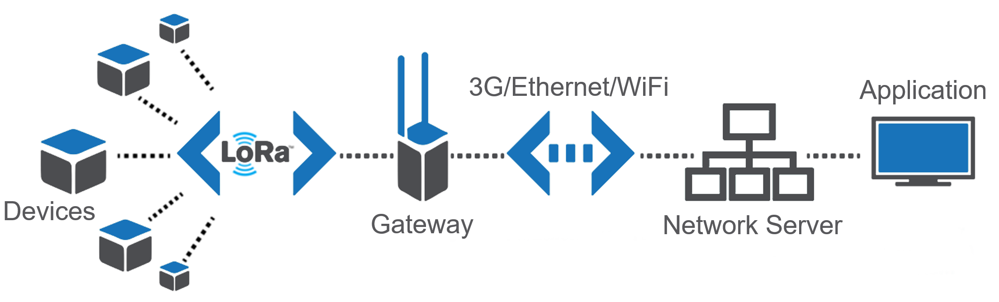

Više o LoRawan
Radioklub Karlovac aktivno se bavi istraživanjem i primjenom LoRaWAN tehnologije, modernog sustava za bežičnu komunikaciju velikog dometa i niske potrošnje energije. LoRaWAN omogućuje povezivanje velikog broja uređaja, senzora i mjernih instrumenata na velike udaljenosti, što ga čini idealnim rješenjem za primjene u pametnim gradovima, poljoprivredi, praćenju okolišnih uvjeta te raznim IoT projektima.
